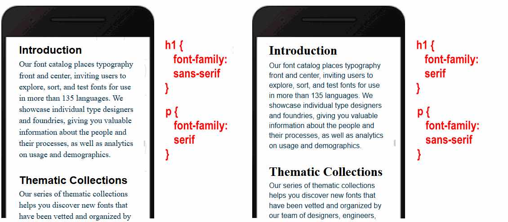

Learning Goals
At the end of this Tutorial, you will be able to:
- Recognise the most commonly used CSS text properties in web design.
Styling with font-family
The two basic values of the font-family property in CSS are serif and sans-serif.
- Serifs are the small lines or ‘squiggles’ at the ends of letter, numbers and other characters.
- Sans-serif fonts do not have these serifs (‘Sans’ is French for ‘without’.)

By default, web browsers display both headings and paragraphs in a serif font.
/* These two style rules make no difference.
Both h2 and h3 sub-headings are already serif by default. */
h2 ( font-family: serif }
h3 ( font-family: serif }
/* This style rule does make a difference. */
p ( font-family: sans-serif }
For printed documents, such as books, newspapers, magazines and so on...
- Serif fonts are generally used for long paragraphs of text. This is because the serifs help the human eye to recognise whole words rather than sequences of individual letters.
- For headings and short blocks of text, either serif or sans-serif fonts are equally appropriate choices.
In web pages, however, there is no evidence that paragraphs of text are more readable in serif fonts. So you will see fonts of either the serif or sans-serif family used for various elements of web pages.
Unfortunately, the sans-serif font does not display well on Windows. For this reason, modern CSS frameworks include a custom property for the sans-serif font. See below.

Styling with font-size
As its name suggests, the font-size property sets the size of text in headings and paragraphs.
- In print design, font sizes are measured in units called points or pt for short.
- In web design, font sizes can be measured in different units. The simplest of these is px, which is short for pixels.
Here are the default values of font-size for headings and paragraphs used by most web browsers.
/* Default values for font-sizes in most web browsers. */
h1 ( font-size: 32px }
h2 ( font-size: 24px }
h3 ( font-size: 18px }
p ( font-size: 16px }
Particularly for <h1> and <h2> headings, the font-size values you choose will depend on the number of characters in the heading. See the examples below.

Styling with font-weight
The two basic values of font-weight are normal and bold. By default, web browsers display paragraphs in normal weight and all headings and sub-headings in bold.
/* This does make a difference. Headings are bold by default. */
h2 ( font-weight: normal }
/* This makes no difference. Paragraphs are normal by default. */
p ( font-weight: normal }
As you learnt in the previous Working with HTML Tutorial, you can make one or a few words in an element bold with the <b> ... </b> tag pair in HTML.

To make entire heading or text paragraph bold, however, use the font-weight: bold property and value pair in CSS.
In modern web design, developers use the following numeric values to assign font-weight. See below.

Styling with font-style
The two basic values of font-style are normal and italic. By default, web browsers display both all headings, sub-headings and text paragraphs in the normal font-style.
/* These make no difference. Both are already normal by default. */
h2 ( font-style: normal }
p ( font-style: normal }
As you learnt in the previous Working with HTML Tutorial, you can make one or a few words in an element italic with the <i> ... </i> tag pair in HTML.

To make entire heading or text paragraph bold, however, use the font-style: italic property and value pair in CSS. The two examples below are from Lou Levits.

Styling with color
You use the color property (US spelling) to set the colour of headings, sub-headings and text paragraphs. By default, web browsers display text in black.
/* These make no difference. Both are already black by default. */
h2 ( color: black }
p ( color: black }
In the Working with Colour Models Tutorial, you will learn about two of the colour name systems used by professional web designers: the RGB system and the hex code system.
Styling with letter-spacing
The letter-spacing property sets the spacing between text characters within a heading, sub-heading or paragraph. Like the font-size property, you can set letter-spacing in px units.
- To reduce the letter-spacing, use a negative value. For example:
h1 ( /* This REDUCES the letter-spacing. */ letter-spacing: -2px }
- To increase the letter-spacing, use a positive value. For example:
h2 ( /* This INCREASES the letter-spacing. */ letter-spacing: 6px }
In web pages, reduced or increased letter-spacing is often used in headings for visual effect. In text paragraphs, however, web designers typically use default letter spacing.
You will commonly see letter spacing effects applied in brand logos to achieve a distinctive appearance. See the examples below.

Styling with text-transform
You can use the text-transform property to control how the web browser displays text in headings, sub-headings or paragraphs as capital letters.
The most commonly-used value of the text-transform property is capitalize. The forces all the text to appear in CAPITAL LETTERS, regardless of how the text is typed in the web page.
/* These force all the text to display in CAPITAL LETTERS. */
h3 ( text-transform: capitalize }
p ( text-transform: capitalize }
Styling with text-align
In Microsoft Word or other word processors, you are typically offered four choices for aligning both headings and text paragraphs: Left, Centered, Right and Justified.

In CSS, the equivalent alignment values are:
text-align: left; /* Default value */
text-align: center;
text-align: right;
text-align: justify; /* Not recommended */
Below are examples of the left, center and right values of the text-align property in CSS.

The justify value of text-align is not recommended because web browsers do not distribute spacing between characters and words proportionally.
Styling with line-height
The line-height property sets the vertical distance between lines of text within an element. For most web browsers, the default line-height is in the range 1.1 to 1.2.
- The lines in headings are typically close together. So you usually will not want to change the line-height for your <h1>, <h2> and <h3> tags.
- For <p> paragraphs of text, however, it is a good idea to increase the line-height from the default value to a value between 1.5 and 1.7.

Styling with margin-top and margin-bottom
The margin-top and margin-bottom properties control how much vertical spacing is displayed above and below web page elements such as headings and text paragraph.
Like the font-size property, these two properties can be written in px (for pixel) units.
Consider the Microsoft Word Paragraph dialog box below.

The equivalent in CSS would be:
- The margin-top is set to 0.
- The margin-bottom is set to 12px.
- The line-height is set to 1.6.
Below you can see examples of margin-top, margin-bottom and line-height values in CSS.

Styling with background-color
By default, browsers display web pages with a white background. You can change this by setting a CSS background-color property for the <body> tag.
(Again, note the US-style spelling of this property.)
/* Web Page Background Colour */
body { background-color: red }